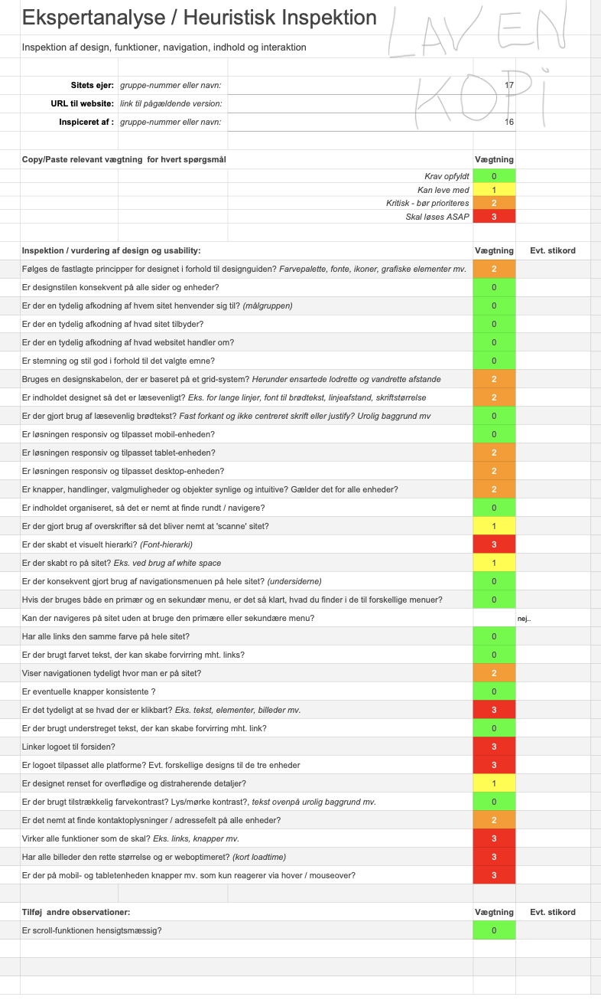

Tema 7 - fælles passion
I klassen skulle vi gå sammen med en anden gruppe, for at få lavet eksperttesten. Vores medstuderende var eksperterne og skulle derfor bedømmes hvad vi havde på vores hjemmeside. Her er resultatet af deres bedømmelse.
Vi var godt klar over at resultatet ville se sådan ud, da det var ting vi godt vidste manglede. Eksperterne havde fået en rimelig rå udgave af vores side, hvilket er grunden til bedømmelserne. Overordnet set var vi glade for udfaldet, og klar til at arbejde videre med det, efterfølgende.